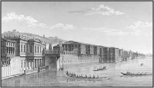
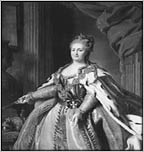
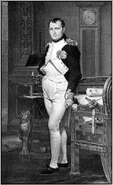

III. SELİM (1761-1808)
“Bâg-ı âlem içre gerçi pek safâdur saltanat
Vakf itsen bir kurı gavgâya câdur saltanat
Bu zamânun devletiyle kimse magrûr olmasun
Kâm alursan adl ile ol dem becâdur saltanat”
İlhamî
III. Selim, 24 Aralık 1761 tarihinde doğmuştur. Babası III. Mustafa, annesi Mihrişah Valide Sultan’dır. III. Mustafa 1774 yılında öldüğünde, III. Selim sadece 13 yaşında olduğu için, amcası I. Abdülhamid taht’a çıktı. I. Abdülhamid, Şehzade Selim’e, kendisinden önceki padişahların tersine oldukça iyi davrandı. Kafes (oda hapsi) hayatı yaşamasına rağmen Selim’in iyi bir eğitim almasına izin verdi.
III. Selim, babası ve amcasının, eğitimine verdiği önemden dolayı bilgili ve kültürlü bir şehzade olarak yetişti. Bir yandan Doğu kültürüne ilgisini devam ettirirken Batı kültürüne de ilgi duyuyordu. İlk defa 1797 yılında, III. Selim zamanında, İstanbul’a Avrupa’dan gelen bir grup, opera gösterisi sergiledi.
Fransız mimar ve ressam Antoine Ignace Melling, İstanbul’da birçok yapılar inşa etti.
İstanbul’un çeşitli manzaralarını gösteren gravürler çizdi. Melling, 1804 yılında III. Selim’in kız kardeşi Hatice Sultan’a ait Ortaköy-Kuruçeşme arasındaki Neşetâbâd Sarayı’nın kısmi onarım ve iç dekorasyonunu yaptı. 1809 yılında Arnavutköy’de bir arazi satın alarak kız kardeşi Beyhan Sultan ve amcasının kızı Esma Sultan (1778-1848) gibi adını taşıyan sahil sarayını, Melling’e inşa ettirdi. Bu saray, İstanbul halkı ve Avrupalılar arasında bir yandan çok ün kazanırken diğer yandan da eleştirilere neden oldu. III. Selim, sık sık kız kardeşinin sarayına uğramaktan büyük zevk alırdı.

III. Selim’in kız kardeşi Hatice Sultan’ın sarayı
Şehzade Selim, müzik ve edebiyatla da ilgilendi. Şiirlerinde “İlhamî, İlham, Selim ve Selimî” mahlaslarını kullanan III. Selim’in, şiirlerinden oluşan bir divan’ı bulunmaktadır. Şiirlerinde divan edebiyatı nazım türlerinin tamamına yakın şekil ve türleri denemiştir. Yaşına göre bilge, alçak gönüllü, sanatkâr bir gönle sahip, aynı zamanda en önemli bestekârlarımızdan da birisiydi. “Sûz-i dilâra” makamı, onun icadıdır. Mevlevi tarikatına mensuptur ve Şeyh Galip’in hamisidir.
Fransa’nın Fransız Devrimi öncesindeki son kralı olan XVI. Louis’le mektuplaştı. Daha taht’a çıkmadan Osmanlı Devleti’nde köklü bir yapısal değişikliğe gerek olduğu inancına vardı. I. Abdülhamid, 7 Nisan 1789 yılında ölünce III. Selim, Avrupa’yı temelinden sarsacak olan Fransız Devrimi’nin eşiğinde, Yirmi Sekizinci Osmanlı Padişahı olarak taht’a çıktı.
1774 yılında Rusya ile imzalanan Küçük Kaynarca Antlaşması’yla Osmanlı Devleti, Kırım’ı Rusya’ya vermek zorunda kalmıştı. III. Selim taht’a çıktıktan sonra, Kırım’ı geri almak için savaş ilan edilmişti. Rusya’nın başında yine II. Katerina vardı.

II. Katerina
Ancak bu sırada Avusturya da Osmanlı ile savaşmaya başlamıştı. Rusya ile 1 Ağustos 1789 tarihinde Fokşan ve 22 Eylül 1789 tarihinde Boze Savaşlarında Osmanlı Devleti, büyük kayıplara uğradı. Akkerman Kalesi ve Besarabya, Rusların eline geçti.
Bu arada Avusturya ile yapılan savaşta yeteri kadar başarı sağlayamayan Avusturya, 4 Ağustos 1791 tarihinde Ziştovi Antlaşması’nı yaptı. Avusturya’nın savaştan çekilmesiyle Rusya da Osmanlı Devleti ile 9 Ocak 1792 tarihinde Yaş Antlaşması’nı imzaladı. Bu antlaşma ile Osmanlı Devleti, Kırım’ın Rusya’nın egemenliği altına geçtiğini tekrar kabul etmek zorunda kaldı.
1792 tarihinden itibaren Osmanlı Devleti ile Rusya, barış içerisinde yaşadı. Böylece III. Selim, Osmanlı ordusunda çoktandır yapmak istediği yenilikleri yapma fırsatı buldu. 1793 yılında Nizam-ı Cedid ordusunu kurdu. Bu sırada Napolyon Bonapart’ın komutası altındaki Fransız orduları, bütün Avrupa’ya üstünlüğünü kabul ettirmiş, Osmanlı Devleti’ne ait olan Mısır’a saldırmıştı (1798). Osmanlı ordusu, Mısır’ı başarıyla savundu. 1801 yılında yapılan El-Ariş Antlaşması’yla Fransa, Mısır’daki emellerinden vazgeçti.
24 Eylül 1805 tarihinde Osmanlılar ile Ruslar, yeni bir dostluk antlaşması imzaladılar. Ancak bu dostluk antlaşmasından kısa bir süre sonra Rusya, Eflak ve Boğdan’a girdi. III. Selim, 22 Aralık 1805 tarihinde boğazları kapatıp, Rusya’ya savaş ilan etti.
Osmanlı Devleti, Kanuni Sultan Süleyman’dan sonra defalarca Avusturya ile savaşa girmiştir. III. Selim taht’a geçtiğinde, Avusturya ile yine savaş vardı. Osmanlı Devleti Avusturya’ya karşı İsmail Zaferi’ni kazandı. Ancak buna rağmen Avusturyalılar Sebeş, Muhadiye, Lazarethane, Pançova, Belgrad ve Semendire’yi işgal ettiler. Avusturya, hem iç hem de dış ilişkiler bakımından zayıf düşmesi sonucu Osmanlı Devleti ile barış antlaşması yapmak istedi. 4 Ağustos 1791 tarihinde imzalanan Ziştovi Antlaşması’yla Avusturya, ele geçirdiği toprakları Osmanlı Devleti’ne geri verdi. Ayrıca Rusya’ya yardım etmeyeceğine de söz verdi. Bu savaş, Avusturya ile Osmanlı Devleti arasındaki son savaş oldu.

Fransa İmparatoru Napolyon Bonapart
Osmanlı Devleti ile Fransa arasında, Kanuni Sultan Süleyman zamanından beri dostluk ilişkileri vardı. Fransızlara verilen kapitülasyonlar nedeniyle bu dostluk temelleri atılmıştı. 16. Louis, Ruslarla savaşan Osmanlı Devleti’nin tarafını tutuyorlardı. Ancak Fransa’nın, Büyük Britanya’nın Mısır ve Uzak Doğu üzerindeki ticaret yollarını kırmak istemesi, bu dostluğu bitirmişti. General Napolyon Bonapart, Mısır’ı ele geçirmek istiyordu. Bu nedenle 2 Temmuz 1798 tarihinde Napolyon Bonapart, İskenderiye’yi işgal etti.
Kahire’nin de 22 Temmuz 1798 tarihinde işgal edilmesi üzerine Osmanlı Devleti, Mısır’ı savunma kararı verdi. 2 Eylül 1798 tarihinde Fransa’ya savaş ilan etti. Şubat 1799’da Filistin’e doğru ilerleyen ve Gazze ile Yafa’yı teslim alan Bonapart, Akka’da Cezzâr Ahmed Paşa tarafından durduruldu. “Akka’da durdurulmasaydım, bütün Şark’ı ele geçirirdim.” diyen General, İstanbul’dan bir ordunun Mısır’a doğru geldiğini duyunca Paris’e döndü. 9 Ekim 1801 tarihinde imzalanan Paris Antlaşması ile Fransa’nın Mısır seferi bitmiş oldu. Böylece Mısır, tekrar Osmanlı’nın yönetimine geçmiş oldu.
KABAKÇI MUSTAFA İSYANI VE III. SELİM’İN TAHTTAN İNDİRİLMESİ
Nizam-ı Cedit adı verilen orduyu kuran III. Selim’in, bu ordudan çok beklentileri vardı. 1600 tane askeri İstanbul’a, diğer 12 bin kişiyi ise diğer vilayetlere gönderdi. Mısır’ın savunulmasında etkin rol oynayan bu ordu, 1806-1812 yılları arasında gerçekleşen Osmanlı-Rus Savaşı’nda fazla etkin olamamıştır.
Önceleri Nizam-ı Cedid’e taraftar olan ve en azından ses çıkarmayan âlimler, Nizam-ı Cedid erkeklerinin suiistimallerini ve ahlaksızlıklarını görünce, aleyhe geçmeye başladılar. Kasım 1806’da Şeyhülislam olan İshakzade Mehmed Atâullah Efendi, âlimleri Nizam-ı Cedid grubuna ve hatta Padişah’a karşı tahrik etti. İş çığırından çıktı ve Padişah, İslam’a aykırı bazı fiilleri yapmakla (mesela ney üflemesi ve tambur çalması, kız kardeşlerinin ve hanımlarının Avrupaî bir hayat yaşamaya başlamaları gibi) suçlandı.
25 Mayıs 1807’de, Kastamonulu Kabakçı Mustafa denilen bir neferi, kendilerine reis tayin eden yeniçeri yamakları, 19 yıl sürecek olan bir iç isyanı başlattılar. III. Selim halim selim birisi olduğu için, kan dökmeye değil, taviz vermeye taraftardı. Bu sebeple 28 Mayıs 1807’de Nizam-ı Cedid’i kaldırdı ve bir gün sonra da kendisi tahttan indirildi. Yerine, amca oğlu olan IV. Mustafa taht’a çıkarıldı. IV. Mustafa, III. Selim’i tekrar kafese geri gönderdi.
Ancak kaos bitmedi. Yeniçeriler, kapı kapı dolaşarak eski Nizam-ı Cedit ordusu mensuplarını öldürmeye başladılar. Bu sırada Nizam-ı Cedit taraftarlarından Ruscuk Âyanı Alemdar Mustafa Paşa, bu kargaşaya son vermek için bir ordu oluşturarak İstanbul’a yürüdü. IV. Mustafa, taht’a çıkabilecek iki kişi olan III. Selim’i ve Mahmud’u boğdurtmaya karar verdi. Böylece tahtın vârisi kalmayacak ve tahtta kendisi kalacaktı. III. Selim, cellatlarla büyük bir gayretle mücadele etse de sonunda canından oldu. III. Selim’in cenazesi, Laleli Camii’nin avlusunda, babası III. Mustafa Türbesi’ne defnedildi.
III. Selim, rivayetlere göre 16 kere nikâh kıymış, bugün dahi ürolojik bir tedaviyle çok kolay çözümlenmeyecek akametten dolayı hiç çocuğu olmamıştır.
EŞLERİ
1- Nef-i Zar Sultan
2- Husn-i Mah Sultan
3- Zib-i Fer Sultan
4- Afitab Sultan
5- Re’fet Sultan
6- Nur-i Şems Sultan
7- Gonca-nigar Sultan
8- Dem-hoş Sultan
9- Tab-i Safa Sultan
10- Ayn-i Safa Sultan
11- Mahbube Sultan